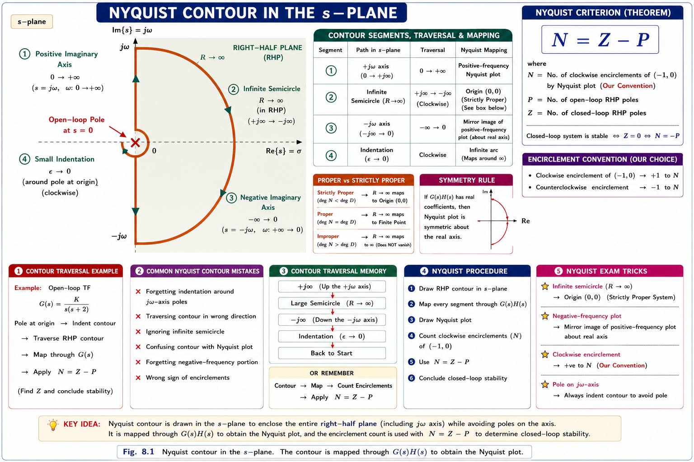
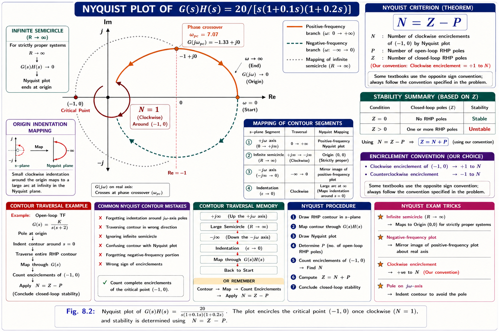
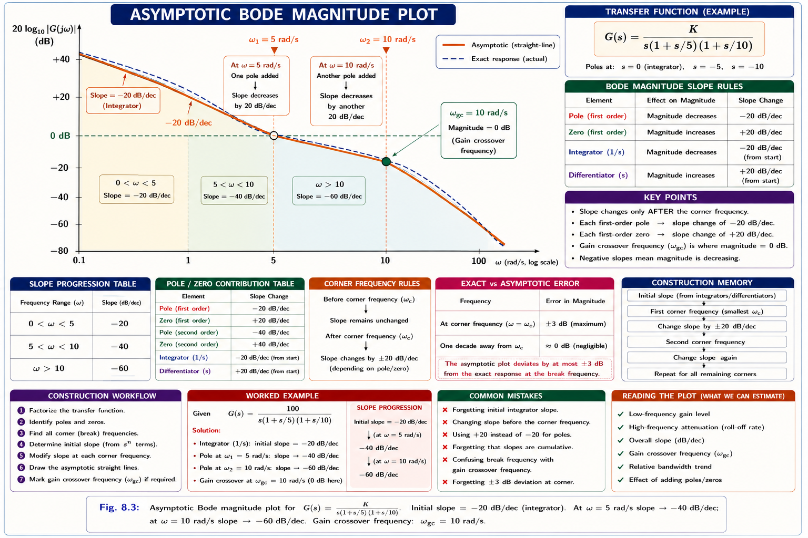
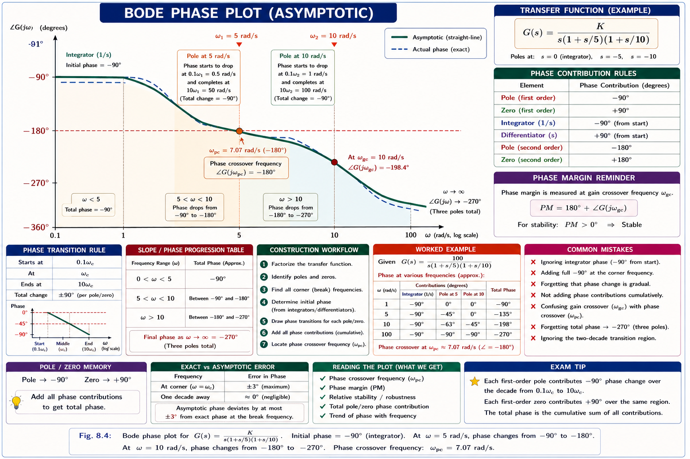
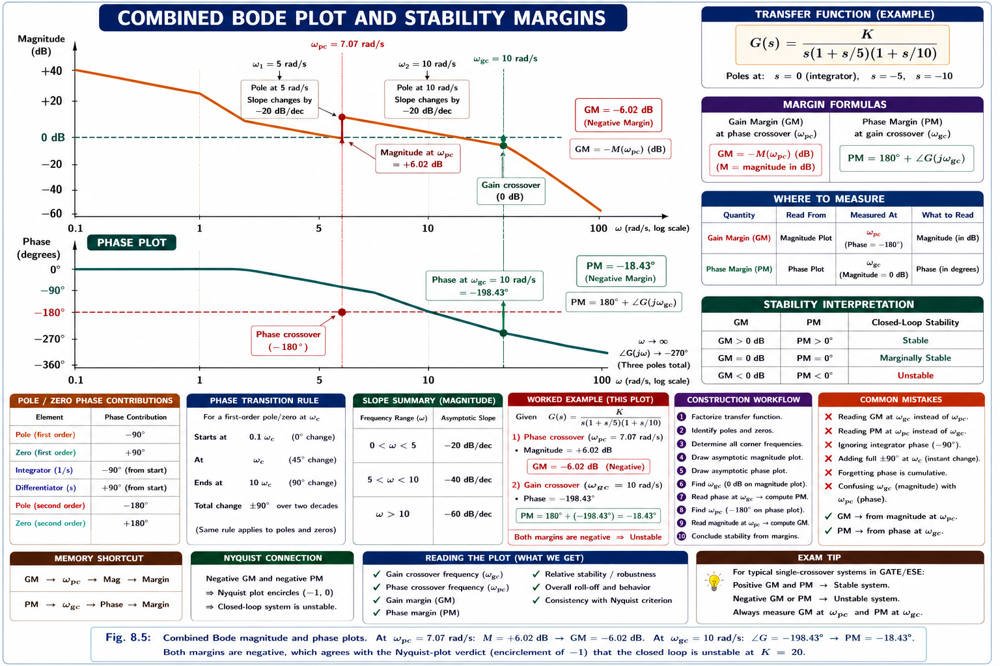

Frequency-domain stability analysis using Cauchy's argument principle, the Nyquist stability criterion, Nyquist plots, Bode magnitude and phase plots, gain crossover and phase crossover frequencies, and gain/phase margins — the most heavily tested topic in GATE and IES Control Systems.
So far in this series, stability has been checked using the Routh-Hurwitz criterion (purely algebraic, works only on the closed-loop characteristic equation) and the root locus (traces closed-loop pole locations as gain K varies, but needs the open-loop transfer function in factored pole-zero form). Both methods share a limitation: they need a mathematical model of the plant. In practice, many industrial plants — a furnace, a chemical reactor, an amplifier — are only known through their measured frequency response: apply a sine wave of frequency ω at the input, measure the magnitude and phase shift of the output sine wave.
Given only experimentally measured magnitude and phase data of the open-loop system G(s)H(s) — with no algebraic transfer function required — how do we predict whether the closed loop will be stable? This is exactly what Nyquist and Bode analysis provide, and it is why frequency response methods are indispensable in industrial control, RF/communication systems, and power electronics feedback loops.
Both methods examine how the open-loop transfer function G(s)H(s) maps points on a chosen contour in the s-plane to the complex GH-plane. The Nyquist plot studies this mapping directly on the complex plane; the Bode plot studies the same information split into two separate curves — magnitude in dB and phase in degrees — each plotted against log ω. They are two views of the exact same underlying frequency-response data.
| Domain | Application of Nyquist / Bode |
|---|---|
| Power Electronics | Stability of voltage-mode / current-mode feedback loops in SMPS and inverters; phase margin ≥ 45° is a standard design target |
| Power Systems | Automatic Voltage Regulator (AVR) and governor loop tuning; stability margins for wide-area damping controllers |
| Electric Drives | Current-loop and speed-loop compensator design in motor drives, ensuring adequate gain/phase margin under load variation |
| Communication Systems | Phase-locked loop (PLL) stability analysis, feedback amplifier stability against parasitic oscillation |
| Industrial Automation | PID auto-tuning software uses measured Bode data (relay-feedback tests) instead of a derived plant model |
| Aerospace | Flight-control-loop stability margins are a certification requirement, verified using Nyquist/Bode analysis |
The Nyquist criterion is a direct engineering application of a classical result from complex analysis called Cauchy's Argument Principle. Understanding it intuitively — before the formula — makes the whole chapter click.
Imagine F(s) is a function with some poles and zeros in the s-plane. Draw any closed curve in the s-plane that does not pass through a pole or zero. Now walk along this curve and, at every point, plot the value F(s) on a second complex plane (the "F-plane"). As s completes one full trip around the closed curve, the mapped point F(s) traces its own closed curve. The number of times this new curve encircles the origin tells you exactly how many more zeros than poles of F(s) were enclosed inside your original curve.
N = number of clockwise encirclements of the origin by F(s) as s traverses the closed contour clockwise | Z = number of zeros of F(s) enclosed by the contour | P = number of poles of F(s) enclosed by the contour
For a unity or non-unity feedback system, the closed-loop characteristic equation is 1 + G(s)H(s) = 0. Define:
We instead plot G(s)H(s) itself (which engineers can measure/compute directly) and count encirclements of the point −1 + j0 instead of the origin. This is because encirclements of the origin by F(s) = 1 + G(s)H(s) are identical to encirclements of the point −1+j0 by G(s)H(s) — shifting the plot left by 1 unit shifts what we call "origin" to "−1". This single trick is what makes the Nyquist plot practical: you plot the familiar open-loop frequency response and just watch how it behaves near the −1 point.
To count Z (closed-loop RHP poles) using N = Z − P, the contour chosen in the s-plane must enclose the entire right half of the s-plane — because that is the unstable region we must keep empty. This special contour is called the Nyquist contour.

Applying Cauchy's principle to F(s) = 1 + G(s)H(s) over this contour, and using the −1 shift explained above, gives the working form of the criterion used to analyse feedback systems:
Z = number of closed-loop poles in the RHP | N = number of clockwise encirclements of the point (−1 + j0) by the G(s)H(s) plot | P = number of open-loop poles of G(s)H(s) in the RHP
Closed-loop system is stable if and only if Z = 0, i.e. N = −P. In words: the Nyquist plot of G(s)H(s) must encircle the point (−1+j0) exactly P times in the counter-clockwise (anticlockwise) direction, where P is the number of open-loop poles already in the right half plane. If the open-loop system is itself stable (P = 0), the closed loop is stable if and only if the Nyquist plot does not encircle −1+j0 at all.
| Case | Open-Loop Poles in RHP (P) | Required Encirclements of −1 | Closed-Loop Stability |
|---|---|---|---|
| Stable open loop, no encirclement | P = 0 | N = 0 | Stable (Z = 0) |
| Stable open loop, CW encirclement | P = 0 | N = 1 (clockwise) | Unstable (Z = 1) |
| Unstable open loop, correct CCW encirclements | P = 2 | N = −2 (i.e. 2 CCW) | Stable (Z = 0) |
| Unstable open loop, insufficient encirclement | P = 2 | N = −1 | Unstable (Z = 1) |
The overwhelming majority of GATE/IES problems use open-loop stable plants (P = 0). In that common case the rule collapses to a single sentence: the Nyquist plot must not encircle the point (−1+j0). If it does encircle −1 at all (in either direction), the closed loop is unstable, and the number of clockwise encirclements directly equals the number of unstable closed-loop poles.
The Nyquist plot is simply the image of the Nyquist contour (Fig 8.1) under the mapping G(s)H(s), drawn on the complex GH-plane. Since the contour is symmetric about the real axis (the +jω and −jω halves are mirror images) and G(s)H(s) has real coefficients, the resulting plot is always symmetric about the real axis too — this halves the work.
Consider the open-loop transfer function used throughout this chapter as a running example:
This system has one open-loop pole at the origin (s = 0) and two real poles at s = −10 and s = −5, so P = 0 (no open-loop poles in the RHP — the open loop is stable). Substituting s = jω:
| ω (rad/s) | |G(jω)H(jω)| | Phase | Re | Im |
|---|---|---|---|---|
| 0⁺ (small) | → ∞ | → −90° | → 0⁻ | → −∞ |
| 1 | 19.51 | −107.0° | −5.70 | −18.66 |
| 2 | 9.11 | −123.1° | −4.98 | −7.63 |
| 5 | 2.53 | −161.6° | −2.40 | −0.80 |
| 7.07 | 1.33 | −180.0° | −1.33 | 0 |
| 10 | 0.63 | −198.4° | −0.60 | +0.20 |
| 20 | 0.11 | −229.4° | −0.07 | +0.08 |
| ∞ | 0 | −270° | 0 | 0⁺ |
At ω = 7.07 rad/s the phase is exactly −180°, meaning the plot crosses the negative real axis at this frequency. This is the phase crossover frequency (ωpc), and the crossing occurs at Re = −1.33 — to the left of the critical point −1+j0. This single number determines the entire stability verdict.

Tracing the plot in the direction of increasing ω (the arrows), the curve passes to the left of the point −1+j0 — that is, it wraps clockwise around −1 exactly once as ω sweeps from −∞ to +∞. Applying the criterion:
Even though the open-loop plant (integrator plus two lag poles) is perfectly well-behaved on its own, closing the unity-feedback loop with this much gain (K = 20) drives the system unstable — the classic effect of too much loop gain combined with too much phase lag from multiple poles. Reducing K (which shrinks the entire plot radially toward the origin) would eventually pull the −180° crossing point back inside −1, restoring stability. This is exactly the design insight Bode plots make effortless — see Section 8.7.
Henrik Bode's insight was to plot 20 log10|G(jω)H(jω)| (in decibels, dB) against log10ω instead of plotting the complex locus directly. Because the transfer function is a product of simple factors, and log converts products into sums, the overall magnitude plot becomes the sum of simple straight-line segments — one per factor — that can be sketched by hand in minutes, without a single point-by-point calculation.
dB = 20 log10|G(jω)|. Taking the log of a product G1·G2·G3 turns it into a sum: 20log|G1| + 20log|G2| + 20log|G3|. Each simple factor (pole, zero, or gain) then contributes an independent straight line on the dB-vs-logω axes, and straight lines simply add.
| Factor | Asymptotic Magnitude Behaviour | Slope |
|---|---|---|
| Constant gain K | Horizontal line at 20log10K, all ω | 0 dB/decade |
| Pole/zero at origin, (jω)∓n | Straight line through ω=1 at 0 dB, for all ω | ∓20n dB/decade (always, no corner) |
| Simple pole, 1/(1+jω/ω1) | 0 dB for ω < ω1; breaks downward at ω = ω1 | −20 dB/decade after corner |
| Simple zero, (1+jω/ω1) | 0 dB for ω < ω1; breaks upward at ω = ω1 | +20 dB/decade after corner |
For a first-order factor (1 + jω/ω1)∓1, the "corner frequency" ω1 = 1/τ is exactly where the asymptotic straight line changes slope. Below ω1 the term contributes ~0 dB (negligible); above ω1 it contributes ∓20 dB/decade. The maximum error between the true curve and the asymptotic approximation is exactly 3 dB, occurring at ω = ω1 itself — a very common GATE fact.
Rewrite in standard Bode (time-constant) form and identify each factor:
| Frequency Range | Active Slope Contributions | Net Slope |
|---|---|---|
| ω < 5 rad/s | Only the pole at origin is active | −20 dB/decade |
| 5 < ω < 10 rad/s | Origin pole + pole at ω=5 | −40 dB/decade |
| ω > 10 rad/s | Origin pole + pole at ω=5 + pole at ω=10 | −60 dB/decade |

Start the line at any convenient low frequency using dB = 20log10K − 20n·log10ω (n = type number), draw with the initial slope of −20n dB/decade, then simply bend the line by −20 dB/decade at every pole corner frequency and by +20 dB/decade at every zero corner frequency, in ascending order of corner frequency. No point-by-point computation is required — this is exactly why Bode plots are the preferred hand-sketching tool over Nyquist plots in exams.
The phase plot is built the same additive way: each simple factor contributes its own arctangent phase curve, and the total phase is the algebraic sum, plotted against logω.
| Factor | Phase Contribution ∠ | ω=0 | ω=∞ |
|---|---|---|---|
| Constant gain K > 0 | 0° (always) | 0° | 0° |
| Pole at origin, 1/(jω)n | −90n° (constant, all ω) | −90n° | −90n° |
| Simple pole, 1/(1+jω/ω₁) | −tan⁻¹(ω/ω₁) | 0° | −90° |
| Simple zero, (1+jω/ω₁) | +tan⁻¹(ω/ω₁) | 0° | +90° |
Each simple-pole phase curve passes through −45° exactly at its own corner frequency and is essentially flat (0° or −90°) a decade below/above the corner. A common hand-sketching approximation draws the transition as a straight line from 0° at ω1/10 to −90° at 10ω1, passing through −45° at ω1.
| ω (rad/s) | 0.1 | 1 | 2 | 5 | 7.07 | 10 | 20 | 50 |
|---|---|---|---|---|---|---|---|---|
| Phase | −91.7° | −107.0° | −123.1° | −161.6° | −180.0° | −198.4° | −229.4° | −253.0° |

Bode plots don't just answer "stable or unstable?" — they quantify how far the system is from instability. This is the single biggest advantage over a plain yes/no Routh-Hurwitz check, and it is why gain margin and phase margin are universal design specifications in industry.
GM is the extra gain (in dB) that can be added before the magnitude curve reaches 0 dB exactly at the frequency where phase is already −180°.
PM is the additional phase lag that can be tolerated at the gain crossover frequency before the phase reaches −180° exactly where the magnitude is already 0 dB.

Positive GM and positive PM ⇒ stable. Negative GM or negative PM ⇒ unstable. A negative gain margin means the magnitude curve is already above 0 dB at ωpc (too much gain at the −180° frequency). A negative phase margin means the phase curve has already fallen below −180° at ωgc (too much phase lag at the 0 dB frequency). Both margins always carry the same sign for a well-posed single-loop system — if you compute one positive and one negative, re-check your working.
| ωgc vs ωpc | GM | PM | Stability |
|---|---|---|---|
| ωgc < ωpc | Positive | Positive | Stable |
| ωgc > ωpc | Negative | Negative | Unstable |
| ωgc = ωpc | 0 dB | 0° | Marginally stable |
Typical practical design specifications call for GM ≥ 6 dB and PM between 30° and 60° (45° is the most common single-number target). Too little margin risks instability from real-world parameter drift and unmodelled dynamics; too much margin (very large PM) usually means a sluggish, overly conservative response. PM also has a direct time-domain link: higher PM ⇒ lower peak overshoot and better damping in the closed-loop step response — the approximate relation ζ ≈ PM/100 (PM in degrees) is a well-known GATE rule of thumb for PM up to about 70°.
With ωgc, ωpc, GM and PM defined, stability assessment from a Bode plot reduces to a single visual check, without ever drawing the Nyquist plot.
The closed loop is stable if and only if the gain crossover frequency occurs before the phase crossover frequency, i.e. ωgc < ωpc. Equivalently: at the frequency where the magnitude curve crosses 0 dB, the phase must still be above (less negative than) −180°.
Increasing K in G(s)H(s) shifts the entire magnitude curve up (by 20log10K) without changing the phase curve at all (gain has zero phase contribution). This means ωpc is completely independent of K, while ωgc moves to the right as K increases. There is therefore a unique critical gain Kc at which ωgc exactly equals ωpc — this is the marginal-stability gain, identical to the value found from Routh-Hurwitz's auxiliary-equation method or from the root-locus jω-axis crossing.
Nyquist/Bode analysis and Routh-Hurwitz are two completely independent mathematical routes to the same critical gain — a powerful way to self-verify answers under exam time pressure. If your Bode-plot Kc and your Routh-array Kc disagree, you have made an arithmetic error somewhere.
Given: P = 2, counter-clockwise encirclements = 2 ⇒ by sign convention, clockwise encirclements N = −2.
Since Z = 0, there are no closed-loop poles in the right-half s-plane.
The closed-loop system is stable, even though the open loop itself was unstable (P = 2 > 0). This illustrates the general principle: feedback can stabilise an unstable open-loop plant, provided the Nyquist plot encircles −1 exactly P times counter-clockwise — the precise number needed to "cancel" the open-loop instability.
Step 1 — Standard time-constant form:
Step 2 — Magnitude and phase:
Step 3 — Find ωgc by setting |G(jω)| = 1:
Since the corner frequency (ω=5) is well above the likely crossover, first try the low-frequency asymptote |G| ≈ 10/ω: setting 10/ωgc = 1 gives ωgc ≈ 10 rad/s. But 10 > 5 (corner), so the asymptote assumption is invalid — solve exactly instead:
Let x = ω²: 0.04x² + x − 100 = 0 ⇒ x = [−1 + √(1+16)] / 0.08 = [−1+4.123]/0.08 ≈ 39.04 ⇒ ωgc ≈ 6.25 rad/s
Step 4 — Phase margin:
PM = 38.7° > 0 ⇒ the closed loop is stable, with a moderate margin somewhat below the ideal 45° target — acceptable but not generous. Since this system has only 2 poles total, phase can never reach −180° at any finite ω (max phase lag → −180° only as ω→∞), so ωpc does not exist at a finite frequency and GM = +∞ — a second-order Type-1 loop with no finite zero is unconditionally stable for all K > 0, a well-known GATE fact.
A pure time delay e−sT has magnitude 1 (0 dB) at all frequencies — it does not shift ωgc — but adds a phase lag of −ωT radians that grows linearly (and unboundedly) with frequency:
At ωgc = 6.25 rad/s, T = 0.05 s: additional phase = −(6.25)(0.05)(180/π) = −0.3125 rad = −17.9°
The system is still stable (PM = 20.8° > 0) but the margin has dropped sharply and now sits below any comfortable design target. This example demonstrates the single biggest practical strength of frequency-response methods over Routh-Hurwitz or root locus: time delay cannot be handled exactly by either of those algebraic techniques (e−sT is not a polynomial), yet it drops directly and exactly into a Bode phase calculation as a linear phase term.
The open-loop transfer function of a unity-feedback system is stable and has no poles in the right-half s-plane. For the closed-loop system to be stable, the Nyquist plot of G(s)H(s) must:
Explanation: With P = 0 (open loop already stable), the criterion Z = N + P reduces to Z = N. For closed-loop stability we need Z = 0, so N must be 0 — no encirclement of −1+j0 in either direction. This is the single most frequently tested Nyquist fact in GATE.
For a certain open-loop system, the gain crossover frequency is 4 rad/s where the phase is −130°, and the phase crossover frequency is 8 rad/s where the gain is −10 dB. The phase margin and gain margin of the system are:
Explanation: PM = 180° + ∠G(jωgc) = 180 + (−130) = 50°. GM = −(dB value at ωpc) = −(−10) = 10 dB. Both margins are positive and ωgc (4) < ωpc (8), consistent with a stable system — always sanity-check that both signs agree.
The initial slope of the Bode magnitude plot of a Type-2 system (two poles at the origin) at very low frequencies is:
Explanation: A pole at the origin of multiplicity n contributes a constant slope of −20n dB/decade at all frequencies below the first finite corner frequency (it has no corner of its own). For Type-2 (n=2), the initial slope is −40 dB/decade — memorise "Type number × (−20 dB/decade) = initial slope" as a direct formula.
For a minimum-phase open-loop stable system, if the loop gain K is increased (all poles/zeros unchanged), which of the following statements is correct?
Explanation: Increasing K shifts the magnitude plot up by 20log10K with zero effect on phase, so ωpc (defined purely by the phase curve) is unchanged, while ωgc (where the now-higher magnitude curve crosses 0 dB) moves right, closer to ωpc. Both GM and PM shrink as a direct consequence — this is the standard "how much can I raise the gain" design question.
An open-loop transfer function has one pole in the right-half s-plane. Its Nyquist plot encircles −1+j0 once in the clockwise direction. The number of closed-loop poles in the right-half s-plane is:
Explanation: P = 1, clockwise encirclement means N = +1 (positive N convention for clockwise). Z = N + P = 1 + 1 = 2. This is a favourite IES trap — students often forget that when P > 0, a clockwise encirclement makes matters strictly worse (adds to, rather than cancels, the instability), unlike the P = 0 case.
Gain Margin is read off the magnitude plot at the phase crossover frequency (ωpc) — note the cross-over: gain margin needs the phase-crossover point. Phase Margin is read off the phase plot at the gain crossover frequency (ωgc) — phase margin needs the gain-crossover point. Each margin is always measured at the other curve's crossover frequency.
Write this exact sequence on your rough sheet in every Nyquist problem: (1) Count P from the open-loop transfer function (poles with positive real part). (2) Count N from the plot (clockwise encirclements of −1, positive sign for clockwise). (3) Compute Z = N + P. (4) Stable only if Z = 0. This four-step chain resolves essentially every GATE/IES Nyquist question without needing to actually sketch the full plot.
Have a question on Nyquist plots, Bode plots, gain/phase margin, or crossover frequencies? Type below or pick a suggestion.
\(N = Z - P\) for any \(F(s)\). Setting \(F(s) = 1+G(s)H(s)\) and shifting to count encirclements of \(-1\) gives \(Z = N + P\). Stable \(\iff Z = 0 \iff N = -P\).
Contour: \(+j\omega\) axis, infinite semicircle through RHP, \(-j\omega\) axis, with \(\epsilon\)-indentation around \(j\omega\)-axis poles. Plot is symmetric about the real axis.
\(20\log|G(j\omega)|\) vs \(\log\omega\). Straight-line asymptotes: pole/zero at origin gives constant \(\mp 20n\text{ dB/dec}\); simple pole/zero bends \(\mp 20\text{ dB/dec}\) at its corner frequency \(\omega=1/\tau\).
Phase = sum of individual \(\angle\)factor contributions. Pole at origin: constant \(-90n^\circ\). Simple pole: \(-\tan^{-1}(\omega/\omega_1)\), passing through \(-45^\circ\) at its own corner.
\(\omega_{gc}\): where \(|G(j\omega)H(j\omega)| = 1\) (\(0\text{ dB}\)) — from magnitude plot. \(\omega_{pc}\): where \(\angle G(j\omega)H(j\omega) = -180^\circ\) — from phase plot.
\(GM = -20\log|G(j\omega_{pc})|\) (\(\text{dB}\)). \(PM = 180^\circ + \angle G(j\omega_{gc})\). Stable \(\iff\) both positive \(\iff \omega_{gc} < \omega_{pc}\). Typical targets: \(GM \ge 6\text{dB}\), \(PM=30^\circ\text{–}60^\circ\).
All technical content is derived from the following standard textbooks and learning resources. All explanations, derivations, diagrams and worked examples are original to Aarova AI.